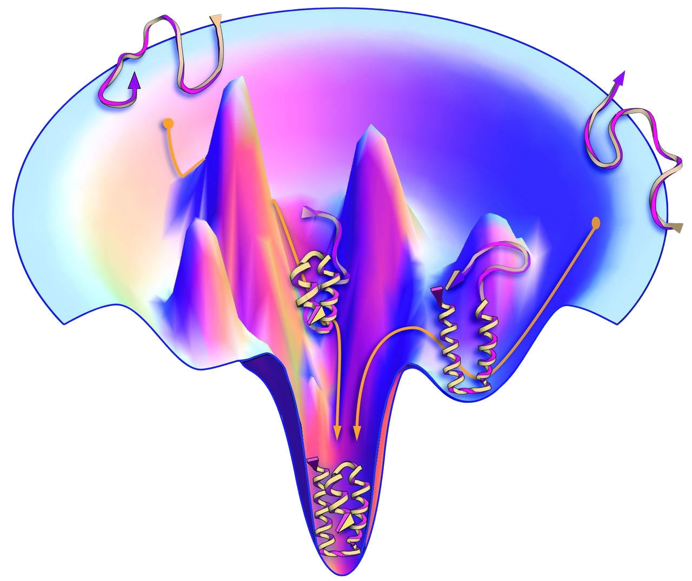

Consensus-based construction of high-dimensional free energy surface
lyuliyao
Department of Computational Mathematics, Science & Engineering
Michigan State University
Free Energy Surface (FES) of Collective variables (CVs)

Main Challenges
The Prevalence of Energy Barriers
Explore the phase space by overcoming energy barriers
Main Challenges
The Prevalence of Energy Barriers
Explore the phase space by overcoming energy barriers
The High Dimensionality
Exploite the posterior error to adaptively optimize the sampling ponits.
Intuitive Idea
- Minization problem: optimize the FES on the given sampled points
-
Maximum problem :
optimize the Sampling Distribution given the trained FES
-
Iteratively solving Minization and Maximation problems gives the constructed FES.
\(\MLMN(\bz) = \|-\nabla_\bz A_{\mathcal N}(\bz) - \bF(\bz)\|\): Residual Error
\(
q(\bz)
\): Sampling Distribution
\(
A_{\mathcal N}(\bz)
\):FES Parameterized
\(
\bF(\bz)
\):Force Calculated
Maximum Problem
- Original: \(\max_q \int - \MLMN(\bz)q(\bz) \intd \bz \)
-
Entropy regularization:
\(
\min_{q} \int (\MLMN^-(\bz) + \kappa_h \ln q(\bz)) q(\bz) \intd \bz
\)
Solution: \(\delta(\bz-\bz^*)\)
Solution: \(q^*(\bz)=\exp(-\kappa_h \MLMN^-(\bz))/Z^*\)
Local Quaditical Approximation
Exploitation and Exploration in McKean stochastic differential equation
Numerical Result (2D)
| Method | Accuracy | Time | |||
|---|---|---|---|---|---|
| \(l_2\) error | \(l_\infty\) error | Simulation | Train | Total | |
| VES | 5.39 | 21.03 | 47.5 | ||
| RiD | 1.52 | 9.46 | 6.25 | 3.79(GPU) | 10.04 |
| CES | 1.45 | 6.74 | 0.88 × 10walkers | 0.18(CPU) | 8.98 |
| 0.13(GPU) | 8.93 | ||||
Numerical Result (3D)
| Method | Time | ||
|---|---|---|---|
| Simulation | Train | Total | |
| RiD | 117 | 79 (GPU) | 196 |
| CES | 4.81× 20walkers | 0.66 (GPU) | 97 |
Numerical Result (30D)
Conclusion
- The difficulty of construct FES is not only on overcoming energy barrier but also in high dimensionality.
- We introduce a posterior errors driven sampling process.